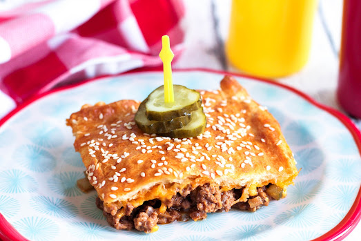

Cheeseburger Casserole
|

|
"A great cheeseburger without the bottom bun which means fewer carbs, right? We loved this, and I think I loved it the most since I could of, but didn't, eat the whole thing. Everything about it tasted like a cheeseburger!"
Cheeseburger Casserole Recipe
Ingredients
- 1 1/2 lb ground beef
- 1 Tbsp extra virgin olive oil
- 1/2 c onion, diced
- 1 tsp minced garlic
- 1/2 tsp salt
- 1/2 tsp pepper
- 3/4 c ketchup
- 1 1/2 Tbsp yellow mustard
- 3/4 c dill pickle, chunky diced
- 1/2 c water
- 1 can crescent rolls, 8 oz.
- 1 1/2 c shredded cheddar cheese
- 1 lg egg, beaten
- 2 Tbsp sesame seeds
Directions
- Preheat oven to 375 degrees. Brown the ground beef and drain.
- In the same skillet, add olive oil. Saute the onion and garlic.
- Return beef to skillet with onions. Mix well. Season with salt and pepper. Next add ketchup, mustard, pickle, and water; mix well. Simmer 3-4 minutes.
- In a sprayed 9x13 baking dish, layer meat mixture and smooth out. Sprinkle with cheese.
- Unroll crescent rolls over the top, pinching seams together. The outside edges may not be covered all the way but that is perfectly fine. Brush with beaten egg and then sprinkle with sesame seeds.
- Bake at 375 degrees 20-25 minutes or until golden brown.